Прорачун моделирање и цртежи ланчаног пара шк. 2022/23. год.
Израчунати потребне параметре и моделирати ланчани пар на основу улазних података:
Снага која се преноси:  60
60 
Број обртаја погонског ланчаника: 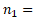 60 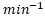
Преносни однос: 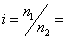 2
Број зубаца погонског ланчаника:  17
17
Ланац ради у средини са најбољим подмазивањем: 1
Фактор спољних динамичких сила:  1.25
1.25
Потребно је:
- прорачунати ланчани преносник снаге из услова да се снага пренесе помоћу троредног ваљкастог ланца,
- измоделирати ланчани преносник урадити цртеже и по могућности направити анимацију кретања.
Литература - извор знања:
Машински елементи II - Спасоје Драпић
"Excel"-ов документ, прорачун без вредности - download
"PDF" документ, пример прорачуна - download
"PDF" документ, таблице за прорачун - download
"PDF" документ, изведени обрасци за прорачун ланчаног пара - download
"PDF" документ, моделирање делова троредног ланчаног пара - download
"PDF" документ, моделирање склопа троредног ланчаног пара - download
Осно растојање:
2032 
Из услова да се снага пренесе помоћу троредног ваљкастог ланца за:
снагу
: 60
број обртаја: 60
стандардни корак са дијаграма на Сл. 4.67 је:
50.8
Број зубаца гоњеног ланчаника:
34
Подеони пречници :
276.463 , 550.568
Број чланака ланца:
105.683
усвајам: 106
Угао обавијања ланчаника се рачуна на основу израза:
0.06764
0.0676925 rad
3.878 °
Највећа снага
 коју ланац корака 50.8 може да пренесе за 60 , за троредни ланац са Сл. 4.67 износи:
коју ланац корака 50.8 може да пренесе за 60 , за троредни ланац са Сл. 4.67 износи:
75
Брзина ланца :
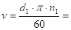 0.869 
Центрифугална сила :
0.024 
Маса јединице дужине ланца Т 4.9 ( за троредни ланац за повећана опетерећења ):
 32
32
Обимна сила :
69.082
Степен сигурности против динамичког лома ланца:
1.261 незадовољава
Фактор сила разарања:
0.17
Фактор унутрашњих динамичких сила Т 4.12:
 1.16
1.16
Прекидна сила ланца Т 4.9 ( за троредни ланац за повећана опетерећења ):
743
Степен сигурности се креће у границама: од 1.5 до 2.5, и израчунати степен сигурности незадовољава, па са дијаграма са Сл. 4.67 усвајам следећи корак ланца:
Осно растојање:
2540
Из услова да се снага пренесе помоћу троредног ваљкастог ланца за:
снагу
: 60
број обртаја: 60
први већи стандардни корак са дијаграма на Сл. 4.67 је:
63.5
Број зубаца гоњеног ланчаника:
34
Подеони пречници :
345.579 , 688.210
Број чланака ланца:
105.683
усвајам: 106
Угао обавијања ланчаника се рачуна на основу израза:
0.06764
0.0676925 rad
3.878 °
Највећа снага
коју ланац корака 63.5 може да пренесе за 60 , за троредни ланац са Сл. 4.67 износи:
125
Брзина ланца :
1.086
Центрифугална сила :
0.057
Маса јединице дужине ланца Т 4.9 ( за троредни ланац за повећана опетерећења ):
48
Обимна сила :
55.265
Степен сигурности против динамичког лома ланца:
2.544 задовољава
Фактор сила разарања:
0.17
Фактор унутрашњих динамичких сила Т 4.12:
1.16
Прекидна сила ланца Т 4.9 ( за троредни ланац за повећана опетерећења ):
1200
Промена осног растојања због усвојеног 106:
2550.085
Помоћу изабраног ланца у радним условима се може пренети снага:
62.580
Помоћу изабраног ланца у лабораторијским условима се може пренети снага:
125
Фактор врсте ланца:
1
Фактор осног растојања:
1
Фактор преносног односа:
1.08
Фактор подмазивања:
1
Фактор броја ланчаника:
1
2
Фактор спољних динамичких сила:
1.25
Фактор броја зубаца малог ланчаника:
1.128
Притисак у клизном пару треба да је мањи од дозвољеног:
Фактор радног века:
0.654
Додирна површина у зглобу ланца Т 4.9:
 3825
3825 
Површинска издржљивост ланца Т 4.13:
25.6 
Радни век ланца::
53680.744 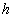
Погонско вратило
Снага која се преноси:
60
Број обртаја:
60
Угаона брзина:
 6.28 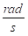
6.28 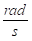
Обртни момент:
 9554140.127
9554140.127 

За материјал вратила Č.0745 из Т 2.3 М.Е.I усвајамо трајну динамичку чврстоћу на једносмерну промену напона за случај увијања:
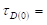 260
Напон увијања мора бити мањи од дозвољеног напона.
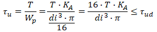
Дозвољени напон увијања:
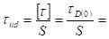 86.667
Степен сигурности усвајамо из T2.5:
 3
3

Називни пречник вратила:
 88.867
88.867
на израчунати пречник вратила додаје се дубина жљеба за клин и стандардизује се пречник вратила:
израчунатом
пречнику вратила: 88.867 одговара дубина жлеба за клин:
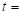 8.5 , те добијамо потребан пречник вратила:
Стандардне дужине клинова: 20, 25, 28, 32, 36, 40, 45, 50, 56, 63, 70, 80, 90, 100, 110, 125, 140, 180, 200, ... , 400, а за нормалне клинове и још: 5, 8, 10, 12, 15, 16, 18.
 97.367
97.367
како се из T 0.1 усвајају вредности за ред R5, R10, R20, R40, па тек на крају подешени бројеви, то се усваја:
пречник погонског вратила:
 100
100
T 4.7 M.E.II
називном пречнику од 100 одговара клин:
 28
28
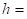 16
9.9
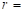 0.8
провера исправности усвојеног клина:
 90.1 > 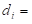 88.867
90.1 > 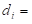 88.867
Гоњено вратило
Степен искоришћења се рачуна по обрасцу:
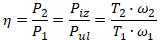
Степен искоришћења за ланчане парове се креће у границама:
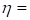 0.98 ... 0.99
усвајам: 0.99
Преносни однос:
2
Обртни момент на погонском вратилу:
 9554140.127
9554140.127
Обртни момент на гоњеном вратилу износи:
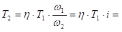 18917197.45
Напон увијања мора бити мањи од дозвољеног напона.

Називни пречник вратила:
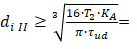 111.591
како се из T 0.1 усвајају вредности за ред R5, R10, R20, R40, па тек на крају подешени бројеви, то се усваја:
пречник гоњеног вратила:
160
T 4.7 M.E.II
називном пречнику од 160 одговара клин:
40
22
13.5
1
Стандардне дужине клинова: 20, 25, 28, 32, 36, 40, 45, 50, 56, 63, 70, 80, 90, 100, 110, 125, 140, 180, 200, ... , 400, а за нормалне клинове и још: 5, 8, 10, 12, 15, 16, 18.
провера исправности усвојеног клина:
146.5 > 111.591
Корак ланца:
63.5
Број зубаца погонског ланчаника:
17
Према обрасцима из табеле Т 4.9 могу да се одреде следеће величине:
22.991
12.065
 39.37 - Т 4.9
39.37 - Т 4.9
Минимално међузубље:
19.882
89.764
134.706 °
Максимално међузубље:
20.315
 147.716
147.716
114.706 °
усвајам
: 20 ,  100 и 120 °
100 и 120 °
Троредни ланац:
за 12.7"> рачунамо:
35.433
38.1 - Т 4.9
63.5
усвајам
: 100
за 38.1"> рачунамо:
усвајам
: 2
 72.29 - Т 4.9
72.29 - Т 4.9
6.35
Пречник подеоне кружнице:
345.579
10.588 °
Пречник подножне кружнице:
306.209
Пречник темене кружнице:
385.584
363.733
усвајам
: 375
Пречник венца ланчаника:
271.695
60 - Т 4.9
Корак ланца:
63.5
Број зубаца погонског ланчаника:
34
Према обрасцима из табеле Т 4.9 могу да се одреде следеће величине:
21.497
12.065
39.37 - Т 4.9
Минимално међузубље:
19.882
170.078
137.353 °
Максимално међузубље:
20.315
420.787
117.353 °
усвајам
: 20 , 200 и 130 °
Троредни ланац:
за 12.7"> рачунамо:
35.433
38.1 - Т 4.9
63.5
усвајам
: 100
за 38.1"> рачунамо:
усвајам
: 2
72.29 - Т 4.9
6.35
Пречник подеоне кружнице:
688.210
5.294 °
Пречник подножне кружнице:
648.840
Пречник темене кружнице:
728.215
709.352
усвајам
: 710
Пречник венца ланчаника:
617.274
60 - Т 4.9